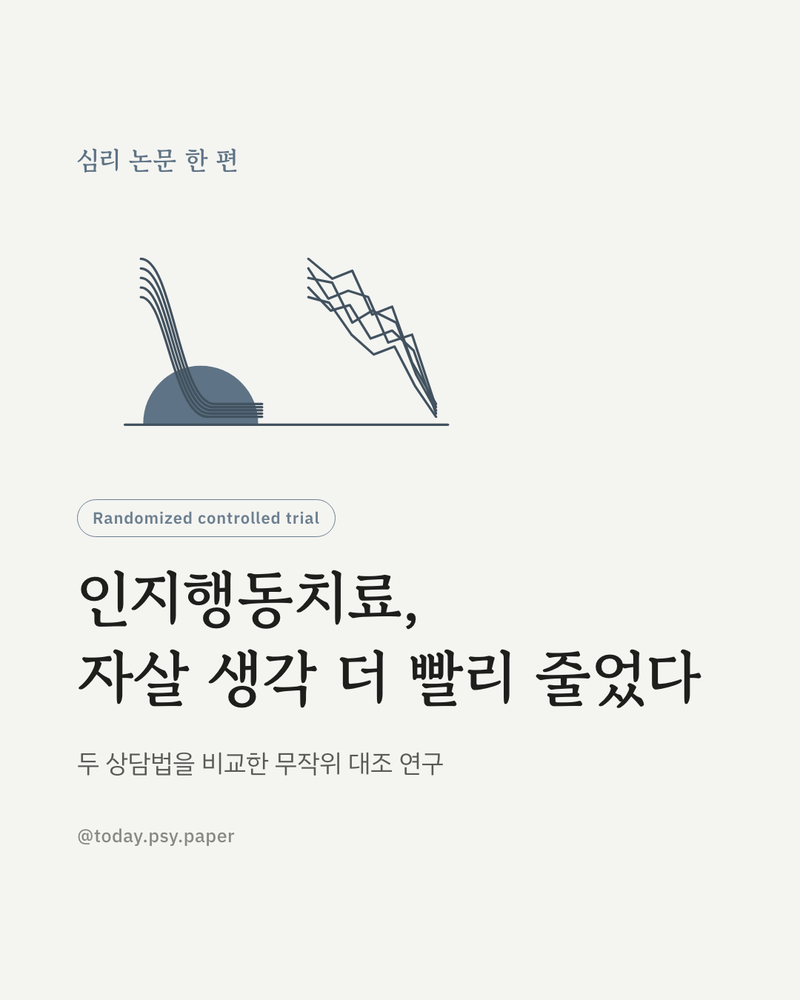
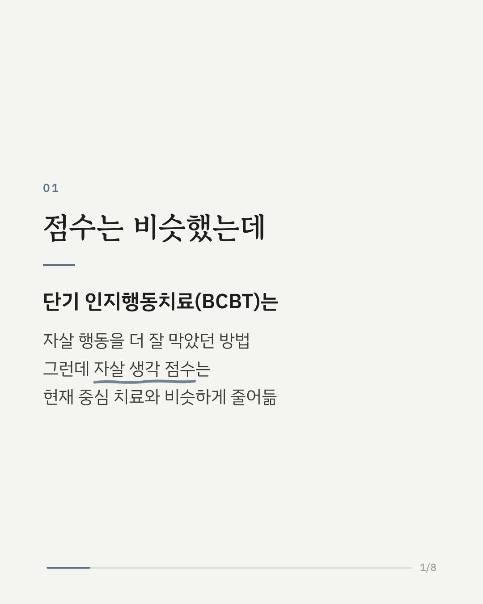
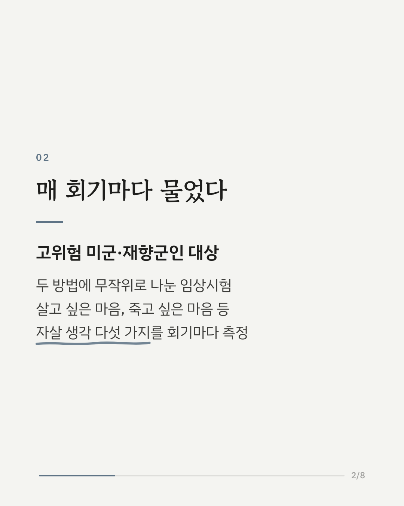
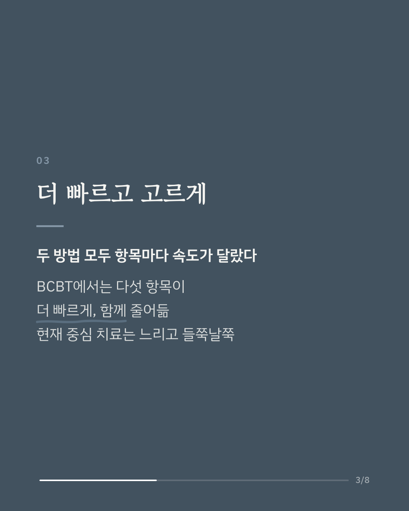
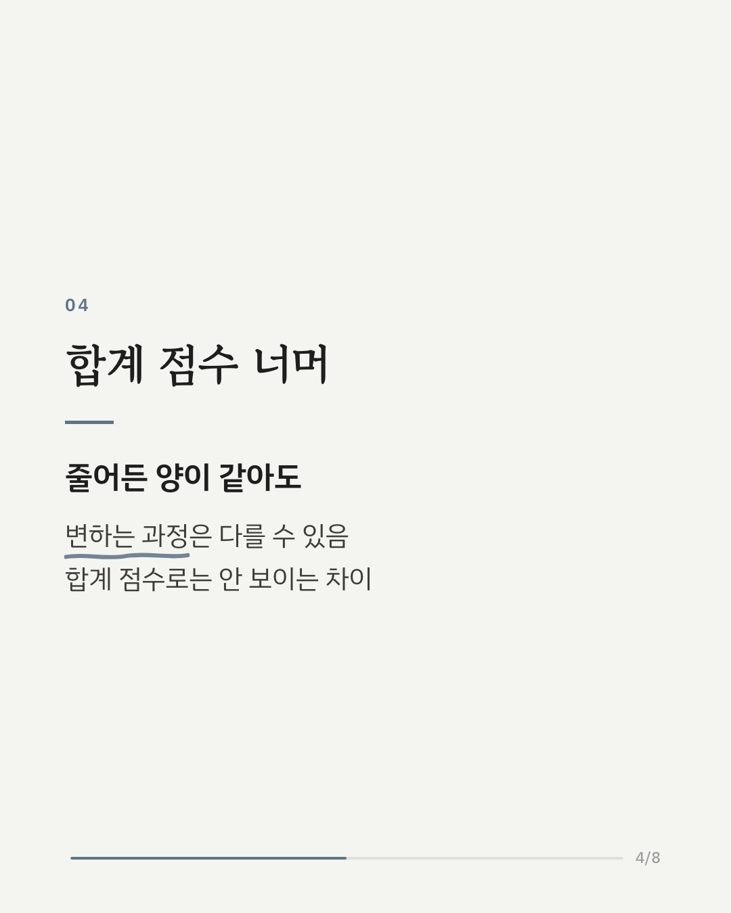
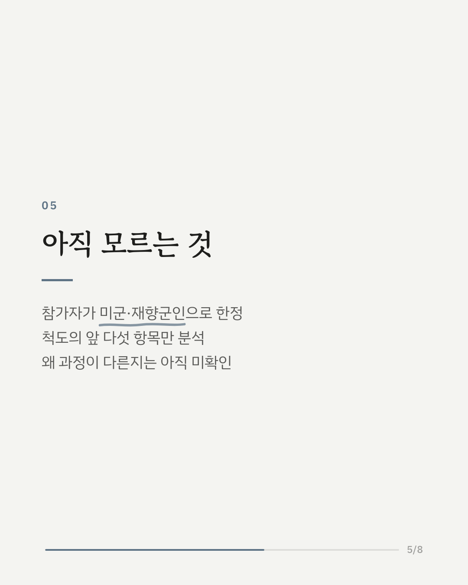
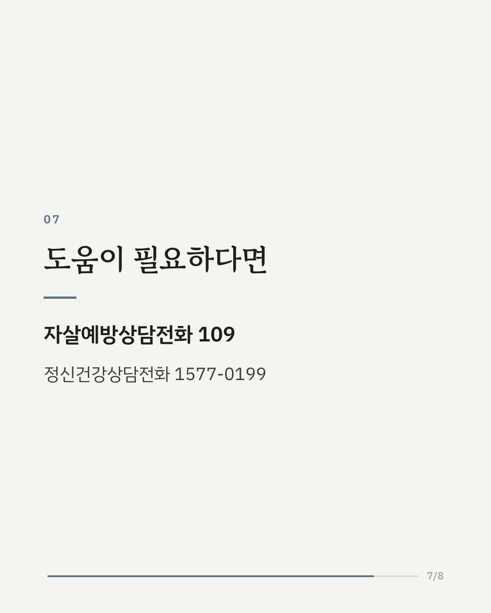
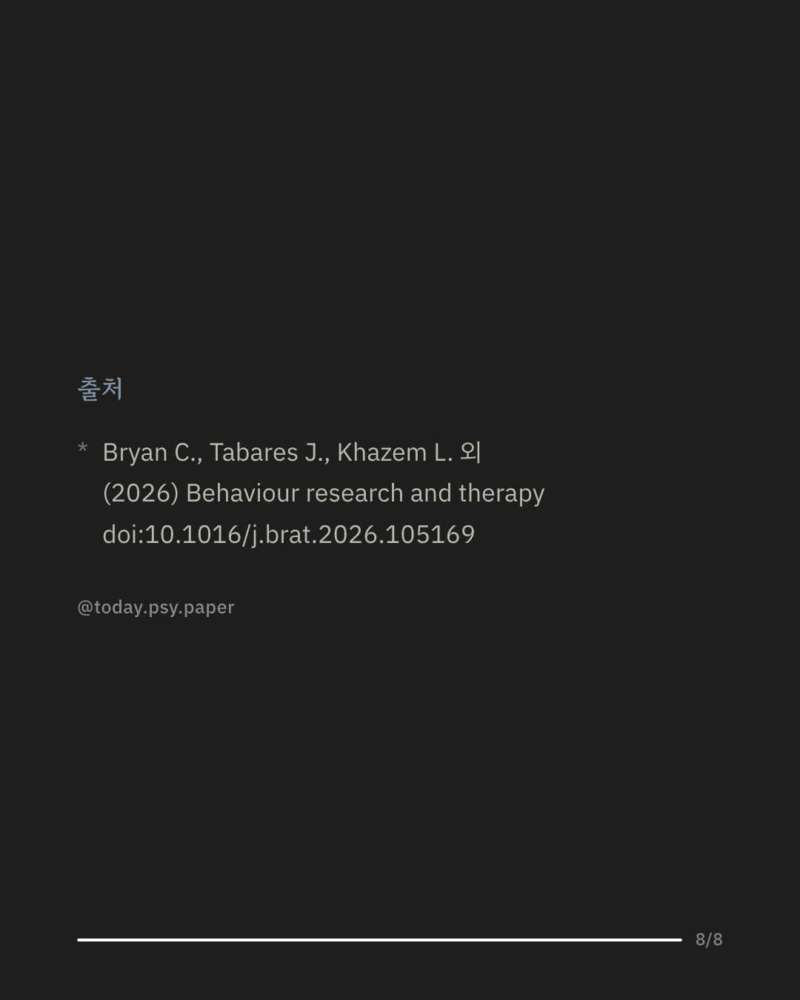

단기 인지행동치료(BCBT)는 현재 중심 치료(PCT)보다 자살 행동을 더 잘 막는 것으로 알려져 있습니다. 그런데 자살 생각의 전체 점수는 두 방법에서 비슷하게 줄어, 연구진은 그 합계 점수 아래에서 무엇이 다르게 움직이는지 살펴봤습니다. 자살 위험이 높은 미국 군인과 재향군인을 두 방법에 무작위로 나눈 임상시험에서, 살고 싶은 마음·죽고 싶은 마음 등 자살 생각의 다섯 가지 측면을 매 회기마다 측정했습니다. 그 결과 두 방법 모두 빨리 줄어드는 측면과 천천히 줄어드는 측면이 있었지만, 단기 인지행동치료에서는 다섯 측면이 더 빠르고 함께 줄어들었습니다. 현재 중심 치료에서는 변화가 더 느리고 측면마다 고르지 않았습니다. 줄어든 양이 같아도 변화가 일어나는 과정은 다를 수 있다는 점을 보여준 연구입니다. 다만 참가자가 군인·재향군인으로 한정되어 있어 다른 집단에서도 같은 양상이 나타나는지는 더 확인이 필요합니다. 출처: Behaviour Research and Therapy (2026), 'Dynamic change patterns in suicidal ideation differ in Brief Cognitive Behavioral Therapy (BCBT) and Present-Centered Therapy (PCT).' DOI: 10.1016/j.brat.2026.105169 힘든 마음이 들 때는 자살예방상담전화 109, 정신건강상담전화 1577-0199에서 도움을 받을 수 있습니다. #임상심리 #정신건강정보 #심리학연구 #논문리뷰 #인지행동치료 #자살예방 #심리상담
python3 publish.py 42858574